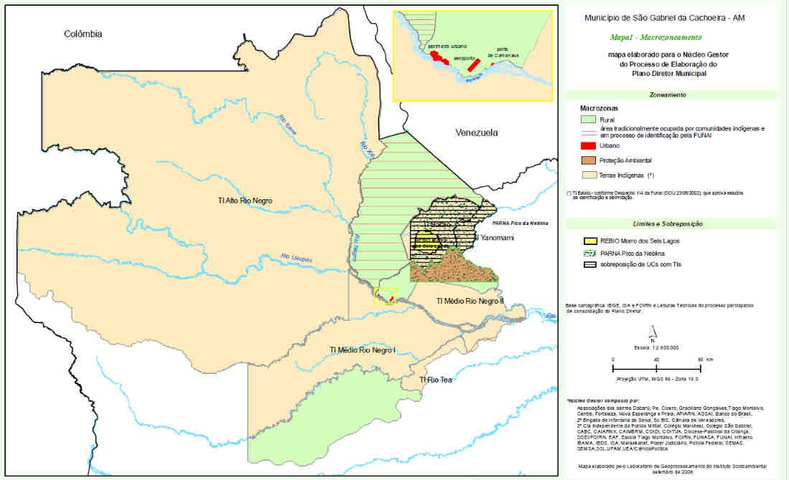
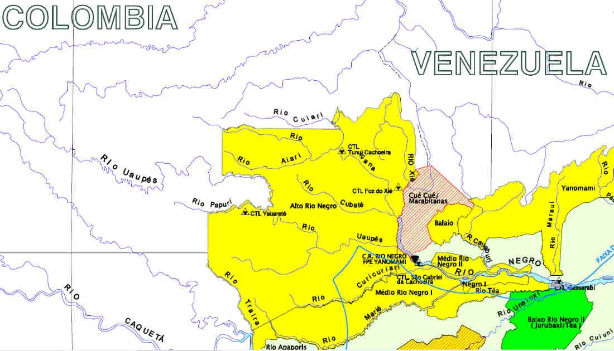
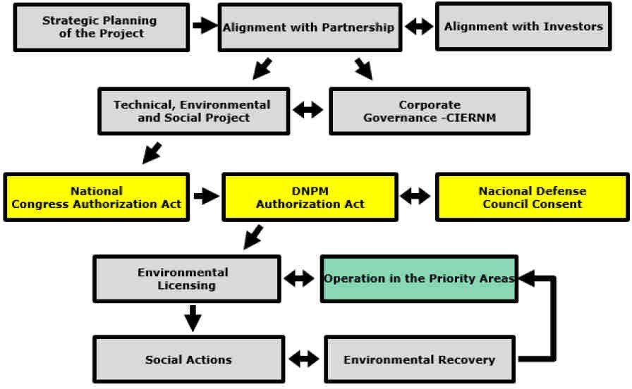
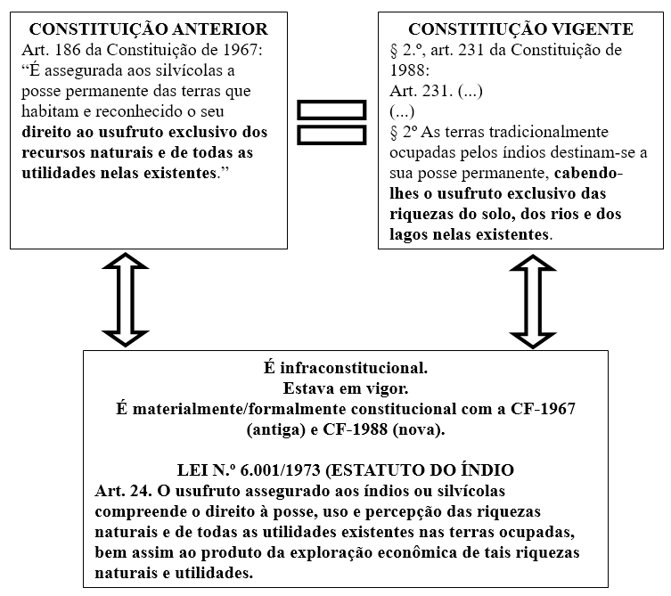

A (in)constitucionalidade da Lei n.º 6.001/1973 quanto ao usufruto exclusivo das riquezas naturais e a mineração de pequena escala em terras indígenas em São Gabriel da Cachoeira/AM: um instrumento econômico como alternativa à exploração predatória para sobrevivência física e cultural?
The (un)constitutionality of Lei n.º 6.001/1973 regarding the exclusive use of natural resources and small-scale mining on indigenous lands in São Gabriel da Cachoeira/AM: an economic instrument as na alternative to predatory exploitation for physical and cultural survival?
Giulia PAROLA1; Adelson Lima GONÇALVES2
1 Universidade Federal do Amazonas (UFAM)/ Curso de Mestrado em Direito do Programa de Pós-Graduação em Direito da Universidade Federal do Amazonas (UFAM) - giuliaparola.law@gmail.com
2 Universidade Federal do Amazonas (UFAM)/ Curso de Mestrado em Direito do Programa de Pós-Graduação em Direito da Universidade Federal do Amazonas (UFAM) - yawi_br@hotmail.com
RESUMO
Este artigo trata sobre a (in)constitucionalidade da Lei n.º 6.001/1973, em especial o capítulo II do título III, que aborda o usufruto exclusivo das riquezas minerais e de todas as utilidades existentes nas terras tradicionalmente ocupadas pelos povos indígenas, em relação à atual Constituição Federal de 1988. Ainda, analisa este instituto como alternativa econômica à exploração predatória visando à sobrevivência física e cultural, quanto a demanda vem dos próprios povos. Este tema ganhou acentuada atenção por parte do Poder Executivo Municipal de São Gabriel da Cachoeira/AM, em 2018, com a criação do Departamento de Pequena Mineração Responsável. A mineração de pequena escala com enfoque cultural e de uso comercial, de protagonismo dos próprios interessados, é o ponto central de discussão. Trata-se de temática polêmica e complexa, que exige debate e informações claras para que os povos afetados possam ter alternativa econômica sustentável, sem perder de vista a proteção do meio ambiente. A articulação dos povos que manifestam vontade, dos poderes públicos, junto aos demais interessados, é essencial para efetivar um desenvolvimento sustentável equilibrado. Esta é uma discussão sem resposta pronta, que demanda uma abordagem ampla, inclusiva e colaborativa, típica da democracia ambiental.
Palavras-chave: usufruto exclusivo; povos indígenas; direito constitucional;
ABSTRACT
This article deals with the (un)constitutionality of Law No. 6,001/1973, in particular chapter II of title III, which addresses the exclusive enjoyment of mineral wealth and all existing utilities on lands traditionally occupied by indigenous peoples, in relation to to the current Federal Constitution of 1988. Furthermore, it analyzes this institute as an economic alternative to predatory exploitation aiming at physical and cultural survival, as the demand comes from the people themselves. This topic gained considerable attention from the Municipal Executive Branch of São Gabriel da Cachoeira/AM, in 2018, with the creation of the Department of Small Responsible Mining. Small-scale mining with a cultural focus and commercial use, led by interested parties themselves, is the central point of discussion. This is a controversial and complex topic, which requires debate and clear information so that the affected people can have a sustainable economic alternative, without losing sight of environmental protection. The articulation of people who express their will, of public authorities, together with other interested parties, is essential to achieve balanced sustainable development. This is a discussion without a ready answer, which demands a broad, inclusive and collaborative approach, typical of environmental democracy.
Keywords: exclusive usufruct; indigenous peoples; constitutional law.
Introdução
Este artigo busca promover o debate sobre o instituto jurídico denominado usufruto exclusivo, que garante aos povos indígenas o direito de explorar e utilizar os recursos naturais em suas terras de maneira sustentável, tanto para usos culturais quanto para possíveis usos comerciais, além de terem um papel ativo nas decisões a respeito. Isso reflete os princípios da democracia ambiental, que valorizam a participação inclusiva e o empoderamento.
O advento da atual Constituição inaugurou um novo arcabouço jurídico-institucional, em relação aos povos indígenas, para uma política de reconhecimento. A Lei n.º 6.001/74 se funda em uma Constituição já superada. Nessa lei, o capítulo II do título II trata das terras indígenas e dedica-se ao usufruto exclusivo das riquezas minerais e de todas as utilidades existentes. É necessária uma análise para verificar se teve recepção ou não.
No Município de São Gabriel da Cachoeira, o Poder Executivo criou o Departamento de Pequena Mineração Responsável, por meio da Lei Municipal nº 088/20181, como órgão de articulação perante os demais órgãos públicos e povos indígenas interessados. Este município, com quase 95% de suas terras sendo Terras Indígenas de posse da União, enfrenta complexidades na consecução de diversas políticas públicas, destacando-se as políticas de alternativas econômicas junto aos Povos Indígenas.
O Poder Executivo Municipal de São Gabriel da Cachoeira, de forma inédita, elaborou e elegeu em seu plano de trabalho um tema polêmico: a pequena mineração em terras indígenas. Discussão diversa da política nacional que busca o debate da grande e média mineração. Há povos indígenas e comunidades que querem empreender como mineradores, enquanto outros grupos indígenas não querem.
A escolha deste tema justifica-se devido que a democracia ambiental envolve a participação ativa de todas as partes interessadas nas decisões que afetam o meio ambiente. Promove a inclusão, a transparência e a justiça ambiental, garantindo que todas as vozes, especialmente as mais vulneráveis sejam ouvidas, seguindo seus princípios como a participação inclusiva, acesso à informação, transparência, justiça ambiental e empoderamento comunitário.
O cerne da questão é: há arcabouço constitucional e infraconstitucional quanto ao usufruto exclusivo das riquezas naturais pelos povos indígenas? A exploração minerária, quanto for do protagonismo dos próprios povos, é um instrumento econômico como alternativa à exploração predatória para a sobrevivência física e cultural? Não se pretende esgotar o debate, mas criar reflexão sobre um tema contemporâneo que suscita muita especulação. Cuida-se de debate que vem de uma parte dos povos indígenas e busca contribuir com Direito à Justiça Ambiental e Direito à Informação Ambiental de viés Constitucional.
Materiais e Métodos
A metodologia adotada para o desenvolvimento deste artigo foi o levantamento bibliográfico, buscando estudos desenvolvidos por teóricos da área e materiais disponíveis na internet, bem como a Constituição Federal de 1988 e as legislações infraconstitucionais.
Os autores pesquisados foram: Carlos Frederico Marés de Souza Filho (2004), com a obra “O renascer dos povos indígenas para o direito”, que faz uma reflexão sobre terras indígenas e mineração; e, Melissa Volpato Curi (2007), que aborda a questão da mineração em terras indígenas sob a perspectiva do desenvolvimento sustentável.
Ademais, a análise sobre a constitucionalidade do capítulo II, do título II, da Lei n.º 6.001/1973, teve como fundamento as aulas de controle de constitucionalidade da disciplina “Teorias Contemporâneas do Direito e da Constituição”, ministrada pelo Professor Carlos Alberto Morais Ramos Filho, no curso de Mestrado em Direito do Programa de Pós-Graduação em Direito da Universidade Federal do Amazonas (PPGDir-UFAM).
Resultados e Discussões
O Município de São Gabriel da Cachoeira fica localizado no Noroeste Amazônico, Estado do Amazonas. É um município brasileiro fronteiriço com a Colômbia e a Venezuela. A população do município, estimada em 45.564 pessoas segundo o Censo IBGE 2010, é majoritariamente indígena, composta por 23 grupos étnicos, sendo eles:
a) família linguística Tukano Oriental: Tukano, Dessano, Kubeo, Kotiria, Tuyuka, Pira-tapuya, Miriti-tapuya, Arapaço, Karapanã, Bará, Siriano, Makuna e Barasana;
b) família linguística Aruak: Baniwa, Kuripako, Baré, Werekena e Tariana;
c) família linguística Maku: Hupda, Yuhupde, Dow e Nadob; e,
d) Yanomami.
Os bens da União abrangem cerca de 95% do território municipal. Dentre a maioria estão as Terras Indígenas. Os demais são de exclusividade do Exército, da Aeronáutica e da Diocese de São Gabriel da Cachoeira.
Figura 1: Macrozoneamento 2006.

Fonte: Município de São Gabriel da Cachoeira.
Figura 2: Terras Indígenas – Situação Fundiária 2018.

Fonte: Mapa da FUNAI.
Dos mapas anteriores, vê-se o seguinte: Terra Indígena Alto Rio Negro, Terra Indígena Médio Rio Negro I, Terra Indígena Médio Rio Negro II, Terra Indígena Balaio e Terra Indígena Rio Teá. Estas já foram declaradas e homologadas pela Presidência da República. Ainda há a Terra Indígena Cué Cué/Marabitanas, que está declarada como terra indígena, destacada em vermelho na Figura 2, mas ainda falta a homologação pela Presidência da República.
A principal economia local é a agricultura de subsistência. Segundo o IBGE, o município possui um PIB per capita de R$ 6.184,50 (2016). O percentual das receitas oriundas de fontes externas é de aproximadamente 95%, evidenciando a dependência externa.
A temática da mineração no Rio Negro foi objeto de debate há tempos e causa polêmica devido a experiências negativas na região e no país.
No ano de 2015, na discussão sobre mineração no âmbito do Plano de Gestão Territorial e Ambiental (PGTA) promovido pela Federação das Organizações Indígenas do Rio Negro (FOIRN), Embaixada da Noruega, Fundação Nacional do Índio (FUNAI) e Instituto Socioambiental (ISA), mais de 120 lideranças indígenas debateram o tema.
O objetivo do seminário foi resgatar experiências passadas, atuais e discutir propostas futuras sobre extração mineral no contexto dos PGTAs. Assim, uma série de depoimentos sobre garimpos na região foram relatados, acompanhados de explicações e trajetórias das diferentes formas de organização próprias dos povos indígenas no Rio Negro desde a década de 1970 (ISA, 2015).
Cuidava-se do Decreto n.º 7.747, de 5 de junho de 2012, que trata de Política Nacional de Gestão Territorial e Ambiental Indígena – PNGATI, que tem o Eixo 5 denominado ” usufruto exclusivo das riquezas do solo”.
Nesse evento, foram expostas experiências ocorridas nessa localidade:
Braz França, presidente da Foirn entre 1990 e 1996, disse que as histórias do garimpo no Rio Negro, apesar de pouco escritas, estão vivas na memória e lembrou como as notícias de garimpo e interesses de empresas mineradoras provocaram invasões e trouxeram problemas como inflação descontrolada, degradação ambiental e violência (ISA, 2015).
Laureano Américo, do Alto Rio Içana, falou das experiências do garimpo na Serra do Porco durante as décadas de 1970 e 1980, quando não havia presença do Estado na região, apenas um pequeno posto de fiscalização da Funai. Este garimpo, de acordo com Laureano, era artesanal até a chegada da Paranapanema. A partir daí, os indígenas foram proibidos de explorar o garimpo e começou a entrada de bebidas, máquinas e drogas (ISA, 2015).
Vamberto Plácido, liderança da região do Médio Rio Negro, recordou o ano de 1992 quando havia mais de 1500 balsas na região e como isso trouxe problemas similares aos já relatados em outros depoimentos. Ele destacou um episódio onde foram jogadas toneladas de frango podre no rio e o fato de que os garimpeiros nunca se enriqueceram ao contrário dos compradores de ouro (ISA, 2015).
O resultado desse evento foi no sentido de que os povos e comunidades indígenas afetados têm o direito de ser consultados antes da aprovação de qualquer proposta legislativa e que sejam garantidos sua autonomia e protagonismo sobre atividades de extração mineral em suas terras. Ainda, pelas narrativas, até o momento não houve alguma experiência que fosse devidamente planejada com a participação de diversos interessados.
Em artigo apresentado na ocasião da 24th World Mining Congress, ao efetuar estudo de caso da iniciativa da Cooperativa Indígena de Extrativismo de Recursos Naturais e Minerais (CIERNM), Gonçalves (2016) analisou o seguinte:
The proposal of the small-scale sustainable mining sets as possible vector towards economic and social development in the area. With the legal requirements taken into account, the proposal can acts as a support to enforce further sustainability policies. Special attention towards the governmental control entities should be taken since the proposal is pointed to be the basis for future policies in the field. Only through its proper execution, monitoring, and observation through own governances will demonstrate the driving importance of the act for sustainability in indigenous lands and effecting the constitutional dictum (GONÇALVES, 2016, p. 479).
Em tradução livre, o artigo conclui que a proposta da mineração sustentável de pequena escala define-se como um possível vetor para a economia local. Com os requisitos legais levados em consideração, a proposta pode atuar como um apoio para a aplicação de novas políticas de sustentabilidade.
A relação dos povos indígenas com o direito brasileiro necessita avançar para se chegar a uma compreensão mais profunda, principalmente para que seus direitos ganhassem seara constitucional. É o que aconteceu com a nova Constituição de 1988. Souza Filho o tema aborda da seguinte forma:
Pode-se concluir que é equivocada a afirmação de que está vedada qualquer exploração mineira em terras indígenas, mas é ainda mais equivocada a ideia de que o poder público federal pode conceder autorizações e permissões enquanto não houver lei regulamentadora do § 3º, do artigo 231 da Constituição Federal. Isso porque há duas exigências constitucionais claras: a autorização do Congresso e a consulta às comunidades. (SOUZA FILHO, 2004, p. 141).
O referido autor faz uma clara análise entre a mineração tradicional, quando se trata de não indígenas e de grande porte, ao teor do Código de Mineração, conforme já referido, e a exploração pela própria comunidade, na qual pode se dizer, mineração sustentável de pequena escala.
Outra coisa, totalmente diferente, é a exploração garimpeira pela própria comunidade, realizada no exercício do seu direito de posse e usufruto exclusivo. Neste caso é legítimo o exercício da atividade pela comunidade. Entretanto esta atividade cria uma situação muito especial e delicada para o direito. Há que se separar atividade garimpeira dos indígenas entre aquelas que compreende a cultura e necessidade de sua reprodução cultural, quando há, e aquela voltada para a exportação ou venda para o mercado.
O uso mineral para a reprodução cultural do grupo ou nação seguramente independe de regras rígidas de proteção, mas o trabalho voltado para o mercado, não. Esta diferença se explica porque a ação cultural ou tradicional indígena não se exerce contra a natureza, mas pela manutenção da sociodiversidade, enquanto a atividade comercial, para uso não cultural, além de agredir a natureza, transforma a sociedade indígena. A Constituição protege os direitos indígenas de manterem como tais, se a atividade não tem o sentido de manter ou proteger os processos culturais, mas ao contrário e indicativo de sua transformação, estão sujeitas à lei geral, ainda que não exatamente, à Lei 7.805/89 (SOUZA filho, 2004, p. 142).
Na dicção de Curi (2007), a questão da mineração ultrapassa aspectos econômicos, relacionando-se com valores ambientais e sociais. Evidentemente, existe grande interesse pela exploração de minérios em terras indígenas. Entretanto, as propostas apresentadas até o momento não contemplaram a pequena mineração, principalmente de protagonismo dos povos indígenas.
A sobrevivência física e cultural das comunidades indígenas supera em muito o interesse na apropriação privada dos recursos minerais, portanto deve ser considerada como um bem de maior valor perante a sociedade, assegurado acima de qualquer crescimento econômico propriamente dito (CURI, 2007, p. 245).
Como se verificou, não havendo outras propostas legislativas que superam a Lei n.º 6.001/1971, estando recepcionado o instituto jurídico usufruto exclusivo das riquezas naturais e de todas as utilidades naquelas terras existentes pela Constituição de 1988, resta clara a existência de arcabouço jurídico para eventual iniciativa que venham dos povos indígenas nesse sentido.
O Decreto nº 88.985, de 10 de novembro de 1983, regulamentou o aludido instituto:
Art. 2º As riquezas e as utilidades existentes no solo das terras indígenas somente serão exploradas pelos silvícolas, cabendo-lhes, com exclusividade, o exercício das atividades de garimpagem, faiscação e cata.
Art. 3º A Fundação Nacional do Índio (FUNAI) adotará as providências necessárias para garantir aos indígenas o exercício das atividades referidas pelo artigo anterior, cabendo-lhe orientar a comercialização do resultado da exploração.
Até o momento, não se tem notícia de que a Fundação Nacional do Índio tenha tomado “providências necessárias” (nos termos da letra do decreto) nesse tema.
O Governo Federal, por intermédio do Ministério de Minas e Energia (MME), em 2018, apresentou resultados da Mineração em Pequena Escala, no momento do Seminário “Diagnóstico socioeconômico e ambiental da Mineração em Pequena Escala” evidentemente, sem ser de Terras Indígenas.
O diagnóstico faz parte do Projeto de Assistência Técnica dos Setores de Energia e Mineral – Projeto META, com foco na ampliação e consolidação dos avanços dos setores energético e mineral brasileiros, dando apoio à competitividade e ao crescimento econômico e sustentável do País (MME, 2018).
No artigo “The challenge for achieving sustainable development through responsible small-scale mining in indigenous areas in Brazil” fora proposta metodologia de trabalho a partir dos instrumentos legais, para uma concepção de mineração responsável por parte da CIERNM e Núcleo de Apoio à Pequena Mineração Responsável (NAP.Mineração) da Universidade de São Paulo:
Figura 3: Metodologia de trabalho proposta no artigo “The challenge for achieving sustainable development through responsible small-scale mining in indigenous areas in Brazil”.

Para trabalhar com algum mineral específico, essa proposta da mineração sustentável de pequena escala define-se como um possível vetor para a economia local, criando identidade própria com a articulação de interessados, como o Poder Público e a iniciativa privada. Ainda, com a participação de entidades com experiência, como universidades que atuam na pesquisa nessa área, com monitoramento e observação através de uma governança rígida, será possível impulsionar a sustentabilidade nas terras indígenas nessa área.
Em 2018, o Município de São Gabriel da Cachoeira, por intermédio da Lei Municipal nº 088/2018, criou o Departamento de Pequena Mineração Responsável (DPMR), como resultado da transformação sóciopolítica.
Em outubro do ano passado, trouxemos neste espaço alguns casos engraçados e até peculiares em relação às eleições municipais. 2017 já começou e daqui a pouco teremos início do funcionamento dos trabalhos nas Câmaras de Vereadores e nas prefeituras. A cidade de São Gabriel da Cachoeira, no Amazonas, foi a que mais elegeu políticos de origem indígena.
O município tem 76.6% da população autodeclarada indígena, pertencente a 23 etnias, e conta com três idiomas oficiais (baníua, ticacno e nheengatu). Nas eleições do ano passado, foram escolhidos sete vereadores que são índios. O prefeito, Clóvis Moreira Saldanha, é índio tariano e conhecido como Clóvis Curubão. (…)
Clóvis Curubão foi eleito com 30,19% dos votos válidos de São Gabriel da Cachoeira. Ele é comerciante e propõe busca por energias renováveis para as comunidades indígenas, apoio aos jogos dessa população, além da valorização da medicina tradicional dos povos que ali vivem.
(…)
De toda forma, a participação dos índios na política é um importante passo para que tenham seus direitos garantidos pela Constituição, muitas vezes tão desrespeitados pelos detentores do poder (TUCHLISNKI, 2017).
Após isso, o município buscou informações junto aos setores de mineração, quando membros do Departamento participaram do “Workshop Multi-Stakeholder – Sessão Catalisadora no Brasil”, realizado em Belo Horizonte/MG, de 18 a 20 de setembro de 2018.
Desenhar a mineração do futuro. Esse foi o pensamento que reuniu representantes de empresas mineradoras, de Organizações Não Governamentais (ONGs), de povos indígenas, de universidades, de igrejas e de governos para debater o desenvolvimento integrado e proativo da mineração, com objetivos econômicos, ambientais e sociais compartilhados com a sociedade.
Conduzidos pelos diretores do DPI, Wendy Tyrrell e Kulvir Singh Gill, os participantes abordaram os seguintes pilares: “Propósito Compartilhado”; “Ecossistemas de Prosperidade” e “Existência de Empresas, Comunidades e Países Competitivos”. “A oportunidade de reunir vários grupos diferentes para debater temas em comum é ação estratégica para o desenvolvimento territorial. A mineração pode ser uma catalisadora para crescimento econômico e para a melhoria da qualidade de vida de todos que moram nestas regiões”, afirmou Wendy Tyrrell, diretora-executiva do DPI. (IBRAM, 2018)
Neste evento tratou-se sobre visões próprias da área e a busca de discussões e formas para melhorar as visões de longo prazo e as estratégias de desenvolvimento voltadas às organizações e às comunidades em regiões de mineração no Brasil. Foi a participação de destaque do município em busca de mais informações.
Feita a devida contextualização, faz-se análise da constitucionalidade do instituto usufruto exclusivo.
Em 1988, ano de promulgação da nova Constituição, o objetivo do Estado Brasileiro era a política integracionista. Com esta nova constituição, os povos indígenas passam a ter patamar constitucional com um novo objetivo: o de reconhecimento.
A Lei n.º 6.001/74, conhecida como Estatuto do Índio, foi criada na vigência da Constituição de 1967. Em relação às terras ocupadas, especialmente no capítulo II do título II, destaca-se o instituto jurídico do usufruto exclusivo das riquezas minerais e de todas as utilidades existentes. Seria essa norma constitucional ou inconstitucional? Foi recepcionada? Daí o uso de (in)constitucionalidade no presente artigo.
Vejamos a transcrição:
CAPÍTULO II
Das Terras Ocupadas
Art. 22. Cabe aos índios ou silvícolas a posse permanente das terras que habitam e o direito ao usufruto exclusivo das riquezas naturais e de todas as utilidades naquelas terras existentes.
Parágrafo único. As terras ocupadas pelos índios, nos termos deste artigo, serão bens inalienáveis da União (artigo 4º, IV, e 198, da Constituição Federal).
Art. 23. Considera-se posse do índio ou silvícola a ocupação efetiva da terra que, de acordo com os usos, costumes e tradições tribais, detém e onde habita ou exerce atividade indispensável à sua subsistência ou economicamente útil.
Art. 24. O usufruto assegurado aos índios ou silvícolas compreende o direito à posse, uso e percepção das riquezas naturais e de todas as utilidades existentes nas terras ocupadas, bem assim ao produto da exploração econômica de tais riquezas naturais e utilidades.
§ 1° Incluem-se, no usufruto, que se estende aos acessórios e seus acrescidos, o uso dos mananciais e das águas dos trechos das vias fluviais compreendidos nas terras ocupadas.
§ 2° É garantido ao índio o exclusivo exercício da caça e pesca nas áreas por ele ocupadas, devendo ser executadas por forma suasória as medidas de polícia que em relação a ele eventualmente tiverem de ser aplicadas.
Art. 25. O reconhecimento do direito dos índios e grupos tribais à posse permanente das terras por eles habitadas, nos termos do artigo 198, da Constituição Federal, independerá de sua demarcação, e será assegurado pelo órgão federal de assistência aos silvícolas, atendendo à situação atual e ao consenso histórico sobre a antigüidade da ocupação, sem prejuízo das medidas cabíveis que, na omissão ou erro do referido órgão, tomar qualquer dos Poderes da República.
Ramos Filho leciona que, quanto há advento de uma nova constituição, emerge a pergunta: pode uma norma anterior à constituição ser recepcionada? Como regra, não. Para que haja recepção, é necessário observar alguns requisitos: ser infraconstitucional, estar em vigor, ser materialmente/formalmente constitucional em relação à constituição anterior e ser materialmente compatível com a constituição posterior.
A par disso, o caso se configura da seguinte forma:

Resta claro que o instituto usufruto exclusivo das riquezas minerais e de todas as utilidades existentes nas terras tradicionalmente ocupadas pelos povos indígenas, previsto pelo capítulo II, do título II, da Lei n.º 6.001/73 foi recepcionado porque: é uma lei infraconstitucional. Estava em vigor. Foi material e formalmente constitucional com Constituição de 1967. E é material e formalmente constitucional em relação à Constituição de 1988. Por isso, é constitucional o aludido instituto.
Conclusão
Buscou-se, com o presente artigo, refletir o instituto jurídico denominado usufruto exclusivo, que garante aos povos indígenas o direito de explorar e utilizar os recursos naturais em suas terras, tanto para usos culturais quanto para possíveis usos comerciais, além de terem protagonismo nas decisões a respeito. Este conceito é típico da democracia ambiental porque envolve a participação ativa de todas as partes interessadas nas decisões que afetam o meio ambiente.
O município de São Gabriel da Cachoeira, por ter uma população majoritariamente indígena, criou um departamento específico para articular debates envolvendo a temática do usufruto exclusivo.
Verificou-se que a eventual utilização de recursos minerais, enquanto para uso cultural, não necessita de regras rígidas. Para uso comercial, no entanto, é necessário estabelecer regras claras e rígidas, considerando que se trata de uma atividade agressiva ao meio ambiente.
É uma alternativa econômica viável à exploração predatória para a sobrevivência física e cultural dos povos indígenas interessados, por meio de mina experimental, focando no usufruto exclusivo. Isso deve ser feito com amplo debate com diferentes setores do Poder Público e da sociedade civil interessada, destacando forças de segurança, órgãos de controle e universidades.
Referências
BRASIL. Constituição da República Federativa do Brasil de 1967. Brasília, DF: Presidência da República.
___. Constituição da República Federativa do Brasil de 1988. Brasília, DF: Presidência da República.
___. Decreto nº 5.051, de 19 de abril de 2004. Promulga a Convenção nº 169 da Organização Internacional do Trabalho - OIT sobre Povos Indígenas e Tribais. Brasília, DF: Presidência da República.
___. Decreto nº 88.985, de 10 de novembro de 1983. Regulamenta os artigos 44 e 45 da Lei nº 6.001, de 19 de dezembro de 1973, e dá outras providências. Brasília, DF: Presidência da República.
___. Lei nº 6.001, de 19 de dezembro de 1973. Dispõe sobre o Estatuto do Índio. Brasília, DF: Presidência da República.
___. Ministério de Minas e Energia. MME apresenta resultados de projeto de Mineração em Pequena Escala.
CURI, Melissa Volpato. Aspectos legais da mineração em terras indígenas. Revista de Estudos e Pesquisas, FUNAI, Brasília, v.4, n.2, p.221-252, dez. 2007.
FUNDAÇÃO NACIONAL DO ÍNDIO (FUNAI). Mapas.
INSTITUTO BRASILEIRO DE MINERAÇÃO (IBRAM). Multi-stakeholders debatem o papel da mineração como catalisadora do desenvolvimento regional. Portal da Mineração. 4/10/2018. IBRAM Notícias.
INSTITUTO BRASILEIRO DE GEOGRAFIA E ESTATÍSTICA (IBGE). São Gabriel da Cachoeira: panorama.
GONÇALVES, Adelson Lima et al. The challenge for achieving sustainable development through responsible small-scale mining in indigenous areas in brazil. 24th World Mining Congress. Proceedings – Sustainability in mining / Brazilian Mining Association / Instituto Brasileiro de Mineração (Org). 1.ed. Rio de Janeiro: IBRAM, 2016. e-book. p. 472 – 480.
INSTITUTO SÓCIOAMBIENTAL. Foirn promove debate sobre condições para mineração nas Terras Indígenas do Rio Negro (AM).
MUNICÍPIO DE SÃO GABRIEL DA CACHOEIRA. Lei nº 0088, de 8 de janeiro de 2018. Dispõe sobre a reorganização da estrutura administrativa do Poder Executivo do Município de São Gabriel da Cachoeira, na forma específica e dá outras providências. São Gabriel da Cachoeira, AM: Associação Amazonense dos Municípios (AAM).
RAMOS FILHO, Carlos Alberto de Moraes. Aula ministrada na disciplina de Teorias Contemporâneas do Direito e da Constituição do Programa de Pós-Graduação em Direito da Universidade Federal do Amazonas (UFAM) / Curso de Mestrado em Direito, em 6 de setembro de 2024.
SOUZA FILHO, Carlos Frederico Marés de. O renascer dos Povos Indígenas para o Direito. Curitiba: Juruá, 2004.
TUCHLISNKI, Camila. Índios querem democracia. Estadão. São Paulo. 20/01/2017. Política. Blog do Humberto Dantas.
O autor Adelson Lima Gonçalves, indígena da etnia Tariana, do grupo linguístico Aruak e subgrupo Kaálina, com nome étnico Yawi, é natural da Comunidade Urubuquara, que fica no Médio Rio Waupés, Terra Indígena Alto Rio Negro, no Município de São Gabriel da Cachoeira. Participou do processo de criação da referida lei local. Fazia parte da assessoria desse Município.↩︎